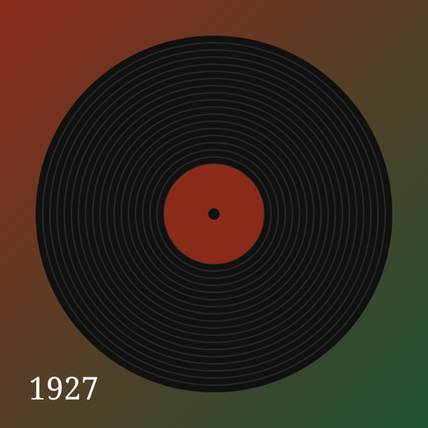

Furry Lewis — “Billy Lyons and Stack O'Lee” (Vocalion 1132, 1927)

Background: The title explicitly names Billy Lyons and Stack O'Lee, the two figures at the centre of the Stagger Lee ballad cycle. This is a strong research lead for a song about retaliatory violence, but the exact lyric and moral point of view must be established from this performance. Later summaries and familiar lyrics are not substitutes for the 1927 master.